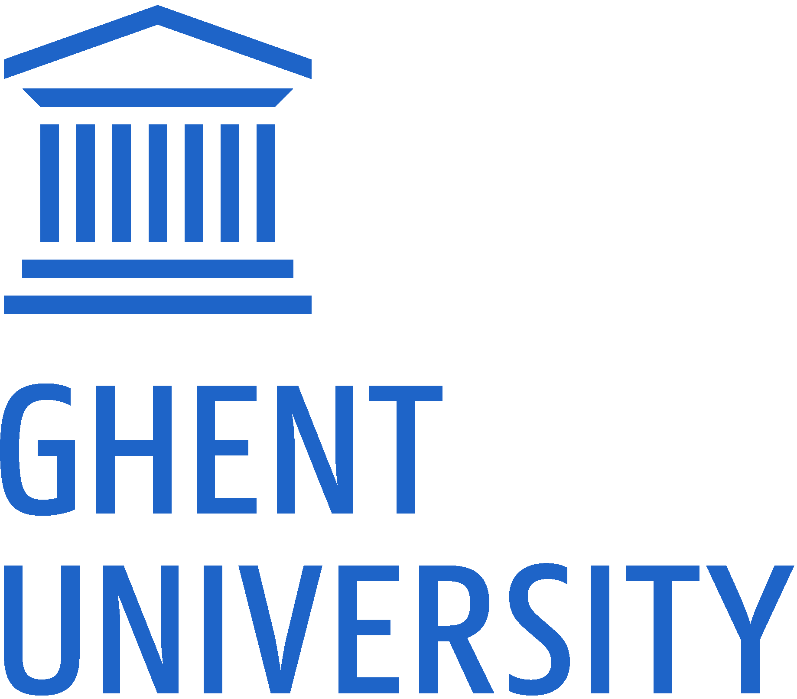

Decentralised Linked Data architectures for the transport domain
Doctoral dissertation submitted to obtain the academic degree of
Doctor of Computer Science Engineering
Supervisors
Prof. Ruben Verborhg, PhD - Prof Pieter Colpaert, PhD Department of Electronics and Information Systems Faculty of Engineering and Architecure, Ghent University
October 2024
Preface
I know, I know... it was about time. But as Ralph Waldo Emerson famously put it: “It’s not the destination, it’s the journey”. And believe me, it has been a long but an amazing one. A journey that started with a 9000 km trip from my native Colombia to Belgium in 2017. I decided to cross the Atlantic Ocean, despite already living at the better end of it (Caribbean, am I right?), leave everything and everyone that I knew behind, and try to pursue my life-long dream of traversing the world. However, I didn’t just decide to do a PhD to travel and see the world. That would not have been very smart. The main motivation came from my previous academic experiences during my master’s degree in the Universidad del Cauca. There I had the opportunity to have a first glimpse of what research was about, published my first papers, attended my first international conference, and I loved it.
I looked hard and around for the opportunity to continue an academic career, hope- fully in a top institution and next to top researchers, while working in industry in the meantime. Almost 3 years after finishing my Master, the opportunity came on a random afternoon at the office, while scrolling through Facebook. My friend and former colleague at Universidad del Cauca, Leandro, posted about a PhD position at Ghent University. He was already living in Belgium and was working at Ghent University, although in a different research group. So my first thank you goes to you compadre and your very fortunate Facebook post that allowed me to apply to this PhD position and kickstart this life changing adventure. (I promise that I don’t check social media while at the office anymore. In any case Facebook stopped being cool a long time ago and I am too old for TikTok). Funny story, while applying to the lab, my interviewers forgot to account for the time difference between Colombia and Belgium and set an online meeting at 5 am Colombian time. I happily took it because having to take it at the office would have been way more awkward than scrolling Facebook, but as I was told later, that situation reflected my commitment (which was real) and helped me get selected.
Coming all the way to Ghent was accompanied by a rollercoaster of emotions. I was excited to start a new chapter in my life, but also scared of the unknown. One person was and has always been there to help me navigate through all of this, whether it was work-related or not. My next thank you needs to go to Pieter C., who has been present at all the stages of this PhD, including the 5 am interview, but also receiving me at the airport when I first landed in Belgium and giving me an immediate and slightly jet-lagged tour around the best city in the world! Thank you Pieter for believing in me, for giving me the opportunity to join KNoWS and specially for supplying me with a continuous and endless amount of enthusiasm for everything we did and still do. I am very grateful for all this time working together and for all the things I have learnt from you.
Joining KNoWS allowed me to meet a group of extremely talented people. So talented, that it was inevitable to face harsh case of impostor syndrome shortly after joining. But, I will never forget one day that I went to eat later than usual to Resto De Brug alone. There I was, questioning my life choices, when coincidentally Ruben V. walked in and joined me. He kindly asked how I was feeling so far in the lab and that conversation leads to my next thank you. Thank you Ruben for giving me the boost of confidence and motivation that I needed to keep going. But also for being a continuous source of inspiration over these years.
While I am at it, I also want to thank all my past and current colleagues at KNoWS for countless enriching conversations, smooth collaborations and nice moments. Thank you Anastasia (I’ll get back to you, I promise 😛), Arthur, Beatriz, Ben, Brecht, Bryan-Elliott, Cristian, Danica, Dieter D., Dieter D. P., Dörthe, Dwight, Dylan, Elias, Els, Esther, Femke, Gayane, Gerald, Gertjan, Gilles, Harm, Ieben, Jeroen, Jiao, Joachim, Jonas, Jonni, Jos, Katrien, Kush, Laurens, Maarten, Mathijs, Martin, Miel, Patrick, Pieter B., Pieter H., Raf, Ruben D, Ruben E., Ruben T., Shamz, Shehab, Sindhu, Sitt Min Oo, Stijn, Sven, Thomas, Tom, Vidya, Wout and Wouter. A special thank you to Erik who at the very beginning made possible my hiring at the lab and during a large part of this PhD was acting behind the scenes to make sure that everything was running smoothly. Thank you also to Kristof, Laura, Joke and all the administrative staff at IDLab, UGent and imec.
As this book reflects, my PhD was only possible thanks to the help and support of many people and to the work carried out over several projects and collaborations. First of all, I want to thank specially all my examination committee members prof. Filip De Turck, prof. Steven Verstock, prof. Marina Aguado, prof. Luis Daniel Ibañez, prof. Pieter Bonte and Dr. Philippe Michiels for their time and effort in evaluating this work, and the valuable feedback they provided. I want to thank all the people that I had the pleasure to work with during these years. Specially to Oscar and David, with whom I collaborated in my very first project at KNoWS and always have a blast on every conference we attend together. To Pieter M., Han and Wout B., with whom I worked in the Velopark project. To Marina, Polymnia, Ivo, Dragos, Ghis and all the ERA team for trusting me and without whom certainly this PhD would have not been possible. Bottom line, a big thank you to all the project partners and co-authors I was lucky to work with during these years.
I also need to mention the person responsible for me having a never-ending urge to keep on exploring the world, my mother Olga. From very early on she always worked hard to keep on showing me how big and amazing the world was, and how much there was to learn from it. At the same time my father Eduardo taught me the importance of hard work and dedication, and how cool was to be the one that knew everything about almost anything. My brother Juan Sebastian was always my partner in crime and the source of many fun times. Thanks for holding the fort. I love you all and I am very grateful for all the effort and support you continue to give me. Thank you also to all my friends in Colombia, Belgium and around the world. Most of you I don’t see very often, but whenever we do it always feels like time didn’t go by.
Finally, I want to thank the most important person in my life, my love and partner in life, Anastasia (I told you I’d get back to you 😉). If there is something I will always be grateful to KNoWS, is for having met you. A big part of the credit for this PhD certainly goes to you. You had my back at all times, you were there to listen to me, to support me, to motivate me, to inspire me. I am very lucky to have you in my life and I am very grateful for all the love and happiness you bring me. I love you, I love our family and I can’t wait to continue living my dream of traversing the world, but this time by your side.
Summary
Data interoperability has been and continues to be an important open challenge both in the public and private sector. The state of the art on interoperability, suggests that a multidisciplinary approach, involving both technical and human coordination, is needed in order to truly achieve interoperability within and across organisational boundaries. In this direction, the Semantic Web vision was proposed more than two decades ago. Thanks to well placed and previously agreed upon semantic data models, the existence of intelligent agents that can reason across a Web of data would be made possible, and thus automatically solve the interoperability challenge. Unfortunately, this vision continues to be a dream to this day. However decentralised Linked Data technologies, which are sourced from the efforts of the original Semantic Web vision, are gaining traction despite their negative reputation and an increasing adoption can be observed both in the public and private sector.
In the last decade, the European Union has been continuously advocating for more interoperable systems and data, and has laid multiple legal frameworks (e.g., the European Interoperability Framework, the Open Data Directive, the Interoperability Act, among others) to promote and support the transformation of (public) organisations and development of new digital services that are interoperable by design and by default. In this landscape, the Transport domain is regarded as one of the key sectors and high-value data sources by the EU where the efforts for interoperability should be prioritised, given its direct impact on citizen life and on the fight against global issues such as climate change.
The most recent technological trends, also sourced from EU initiatives such as Data Spaces, go towards decentralised system infrastructures. Data Spaces recognise the practical impossibility of centralising all the knowledge in one single place, and aim to allow for sovereign, trustful and legally compliant governance of data assets within and across organisations. This raises the need for interoperability solutions that allow organisations to migrate legacy technology stacks and maintain data life cycles (creation, publication and consumption) at low operational costs. Here, Linked Data technologies are suited to provide a technical framework for reaching interoperability, given their native decentralised nature sourced from the Web itself.
This PhD work studies the use of decentralised architectures based on Linked Data technologies over 3 real-world use case scenarios coming from the transport sector, namely (i) publishing bicycle infrastructure information for public use; (ii) public transport route planning over the Web and; (iii) railways infrastructure data integration for supporting route compatibility checks. Concretely I study the suitability of Linked Data technologies to support practical solutions for use cases within these scenarios and whether Linked Data technologies can be adopted for production-ready systems. The challenges studied in this work include, the feasibility of creating decentralised Web applications using modern and developer friendly frameworks over semantically described Linked Data, and analysing the scalability and limitations of Linked Data based solutions and their capabilities to achieve automated data integration that facilitates interoperability.
The main contributions of this dissertation include the provision of evidence on the use and adoption of Linked Data technologies as an interoperable solution for real and important use cases in the transport domain. For instance, to this date municipalities and 11 private organisations continue to use the Velopark solution that supports the decentralised publishing and maintenance of semantically annotated bicycle parking data in Belgium. Also the system architecture created for ERA to integrate and publish a knowledge graph containing information about the European railway infrastructure and authorised railway vehicles, motivated the agency to make Linked Data technologies the default setting for new data endeavours. More importantly, the ERA Vocabulary has been adopted as an official building block for the Common European Mobility Data Space and as a reference data model in the EU legislation.
The main conclusion drawn from this PhD work is that Linked Data technologies are ready for the real world. Practical (user-oriented) Web applications can be created and supported over decentralised and cost-efficient architectures based on Linked Data technologies. Examples of this can be seen in the case of the Velopark user application for visualising and looking for bicycle parkings of specific characteristics, and in the case of the route compatibility check application that allows to calculate custom routes over the European railway network and assess its physical and technical compatibility with given vehicle types, which is maintained by the EU Agency for Railways. Both applications remain operational to this day. In this PhD work, we also see that alternative design of data interfaces that aim for a more balanced (computational) cost distribution among data publishers and consumers, are able to provide scalable and cost-efficient technical solutions for interoperable data exchange. This is evidenced in the study made in this work of Linked Data-based APIs for the case of public transport route planning, whose foundational principles and results can also be applied to other use cases, even outside the transport domain. However, additional research is needed to overcome the observed limitations in terms of performance when handling large volumes of data. For example, with more complex API designs that allow for more granular access to particular and relevant, yet still cost-efficiently published, data subsets for given queries. Lastly, it is important to note that a common denominator observed throughout the different scenarios explored during this PhD work, is the fact that the main obstacles for interoperability using Linked Data technologies were not of technical nature but of human nature. Changing mindsets of people in charge could prove to be more challenging than building the technical solutions that provide interoperability across systems, although as this work shows, is not impossible. The quick development of demonstrators that highlighted the benefits of Linked Data technologies and at the same time showed that solutions could be built in relatively short time spans and at low costs, proved to be the key asset to overcome this type of human-made obstacles.
Future work should focus on the development of technical specifications that allow for low-cost and flexible data exchange architectures that overcome the limitations of the data dump vs query API dichotomy. This should be complemented by ways to describe data sources, not only at a metadata level, but also at a granular content level in a way that enables applications to autonomously discover and efficiently select sources relevant for their queries, thus moving us a step closer to the original Semantic Web dream. Also, multiple challenges will arise when trying to provide functional solutions for all the required dimensions, necessary to accomplish the vision of Data Spaces based on Linked Data technologies.